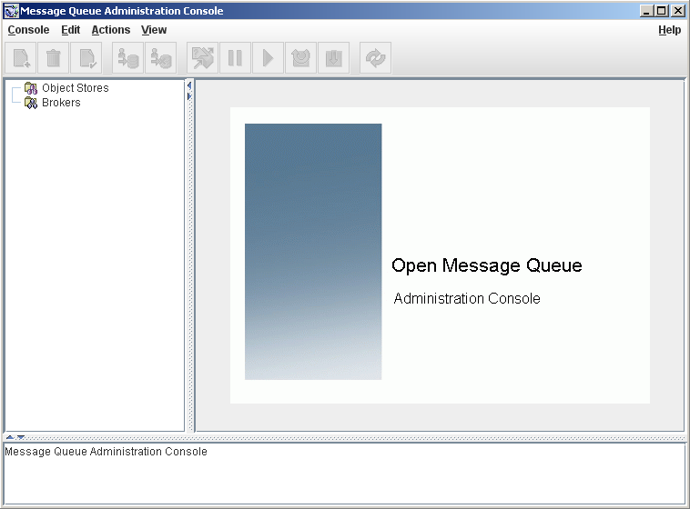
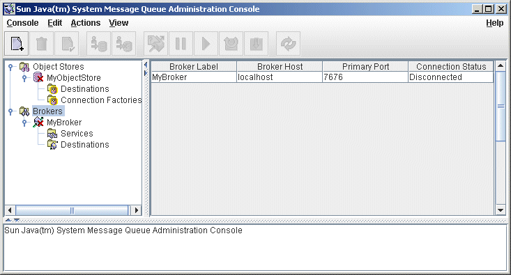
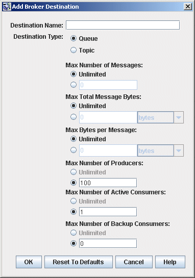

IMQ_HOME/bin/imqadmin2 Quick-Start Tutorial
This quick-start tutorial provides a brief introduction to Message Queue administration by guiding you through some basic administrative tasks using the Message Queue Administration Console, a graphical interface for administering a message broker and object store. The chapter consists of the following sections:
The tutorial sets up the physical destinations and administered objects
needed to run a simple JMS-compliant application,
HelloWorldMessageJNDI. The application is available in the
helloworld subdirectory of the example applications directory,
IMQ_HOME/examples. In the last part of the tutorial, you will run this
application.
|
Note
|
You must have the Message Queue product installed in order to follow the tutorial. |
The tutorial is only a basic introduction; it is not a substitute for reading the documentation. By following the steps described in the tutorial, you will learn how to
-
Start a Message Queue broker
-
Connect to a broker and use the Administration Console to manage it
-
Create physical destinations on the broker
-
Create an object store and use the Administration Console to connect to it
-
Add administered objects to the object store and view their properties
|
Note
|
The instructions given in this tutorial are specific to the Windows platform. Where necessary, supplemental notes are added for users of other platforms. |
Some administrative tasks cannot be accomplished using the Administration Console. You must use command line utilities to perform such tasks as the following:
-
Start up a broker
-
Create a broker cluster
-
Configure certain physical destination properties
-
Manage a JDBC database for persistent storage
-
Manage a user repository
-
Install a broker as a Windows service
-
Generate SSL certificates
All of these tasks are covered in later chapters of this manual.
Starting the Administration Console
To start the Administration Console, enter the command:
You may need to wait a few seconds before the Administration Console window is displayed (see Figure 2-1).
Figure 2-1 Administration Console Window

Take a few seconds to examine the Administration Console window. It has a menu bar at the top, a tool bar just below it, a navigation pane to the left, a result pane to the right (now displaying graphics identifying the Message Queue product), and a status pane at the bottom.
|
Note
|
As you work with the Administration Console, you can use the Refresh command on the View menu to update the visual display of any element or group of elements, such as a list of brokers or object stores. |
Administration Console Online Help
The Administration Console provides a help facility containing complete information about how to use the Console to perform administrative tasks. To use the help facility, pull down the Help menu at the right end of the menu bar and choose Overview. The Administration Console’s Help window (Figure 2-2) will be displayed.
Figure 2-2 Administration Console Help Window

The Help window’s navigation pane, on the left, organizes topics into three areas: Message Queue Administration Console, Message Queue Object Store Management, and Message Queue Broker Management. Within each area are files and folders. The folders provide help for dialog boxes containing multiple tabs, the files for simple dialog boxes or individual tabs. When you select an item in the navigation pane, the result pane to the right shows the contents of that item. With the Overview item chosen, the result pane displays a skeletal view of the Administration Console window identifying each of the window’s panes, as shown in the figure.
Your first task with the Administration Console will be to create a reference to a broker. Before you start, however, check the Help window for information. Click the Add Broker item in the Help window’s navigation pane; the contents of the result pane will change to show text explaining what it means to add a broker and describing the use of each field in the Add Broker dialog box. Read through the help text, then close the Help window.
Working With Brokers
This section describes how to use the Administration Console to connect to and manage message brokers.
Starting a Broker
You cannot start a broker using the Administration Console. Instead, enter the command:
IMQ_HOME/bin/imqbrokerdIf you used the Windows Start menu, the command window will appear, indicating that the broker is ready by displaying lines like the following:
Loading persistent data... Broker "imqbroker@stan:7676 ready.Reactivate the Administration Console window. You are now ready to add the broker to the Console and connect to it. You do not have to start the broker before adding a reference to it in the Administration Console, but you must start it before you can connect to it.
Adding a Broker to the Administration Console
Adding a broker creates a reference to that broker in the Administration Console. After adding the broker, you can connect to it.
To Add a Broker to the Administration Console
-
Click on the Brokers item in the Administration Console window’s navigation pane and choose Add Broker from the Actions menu.
Alternatively, you can right-click on Brokers and choose Add Broker from the pop-up context menu. In either case, the Add Broker dialog box (Figure 2-3) will appear.
Figure 2-3 Add Broker Dialog Box

-
Enter a name for the broker in the Broker Label field.
This provides a label that identifies the broker in the Administration Console.
Note the default host name (localhost) and primary port (7676) specified in the dialog box. These are the values you must specify later, when you configure the connection factory that the client will use to create connections to this broker.
For this exercise, type the nameMyBrokerinto the Broker Label field. Leave the Password field blank; your password will be more secure if you specify it at connection time. -
Click OK to add the broker and dismiss the dialog box.
The new broker will appear under Brokers in the navigation pane, as shown in Figure 2-4. The red X over the broker’s icon indicates that it is not currently connected to the Administration Console.
Figure 2-4 Broker Displayed in Administration Console Window

Once you have added a broker, you can use the Properties command on the Actions menu (or the pop-up context menu) to display a Broker Properties dialog box, similar to the Add Broker dialog shown in Adding a Broker to the Administration Console, to view or modify any of its properties.
Connecting to a Broker
Now that you have added a broker to the Administration Console, you can proceed to connect to it.
To Connect to a Broker
-
Click on the broker’s name in the Administration Console window’s navigation pane and choose Connect to Broker from the Actions menu.
Alternatively, you can right-click on the broker’s name and choose Connect to Broker from the pop-up context menu. In either case, the Connect to Broker dialog box ( Figure 2-5) will appear.
Figure 2-5 Connect to Broker Dialog Box

-
Enter the user name and password with which to connect to the broker.
The dialog box initially displays the default user name,admin. In a real-world environment, you should establish secure user names and passwords as soon as possible (see User Authentication); for this exercise, simply use the default value.
The password associated with the default user name is alsoadmin; type it into the Password field in the dialog box. This will connect you to the broker with administrative privileges. -
Click OK to connect to the broker and dismiss the dialog box.
Once you have connected to the broker, you can use the commands on the Actions menu (or the context menu) to perform the following operations on a selected broker:-
Pause Broker temporarily suspends the operation of a running broker.
-
Resume Broker resumes the operation of a paused broker.
-
Restart Broker reinitializes and restarts a broker.
-
Shut Down Broker terminates the operation of a broker.
-
Query/Update Broker displays or modifies a broker’s configuration properties.
-
Disconnect from Broker terminates the connection between a broker and the Administration Console.
-
Viewing Connection Services
A broker is distinguished by the connection services it provides and the physical destinations it supports.
To View Available Connection Services
-
Select Services under the broker’s name in the Administration Console window’s navigation pane.
A list of the available services will appear in the result pane (see Figure 2-6), showing the name, port number, and current state of each service.
Figure 2-6 Viewing Connection Services

-
Select a service by clicking on its name in the result pane.
For this exercise, select the namejms. -
Choose Properties from the Actions menu.
The Service Properties dialog box (Figure 2-7) will appear. You can use this dialog box to assign the service a static port number and to change the minimum and maximum number of threads allocated for it.
Figure 2-7 Service Properties Dialog Box

For this exercise, do not change any of the connection service’s
properties.
4. Click OK to accept the new property values and dismiss the dialog
box.
The Actions menu also contains commands for pausing and resuming a
service. If you select the admin service and pull down the Actions menu,
however, you will see that the Pause Service command is disabled. This
is because the admin service is the Administration Console’s link to the
broker: if you paused it, you would no longer be able to access the
broker.
Working With Physical Destinations
A physical destination is a location on a message broker where messages received from a message producer are held for later delivery to one or more message consumers. Destinations are of two kinds, depending on the messaging domain in use: queues (point-to-point domain) and topics (publish/subscribe domain). See the Open Message Queue Technical Overview for further discussion of messaging domains and the destinations associated with them.
Creating a Physical Destination
By default, message brokers are configured to create new physical destinations automatically whenever a message producer or consumer attempts to access a nonexistent destination. Such auto-created destinations are convenient to use while testing client code in a software development environment. In a production setting, however, it is advisable to disable the automatic creation of destinations and instead require all destinations to be created explicitly by an administrator. The following procedure shows how to add such an admin-created destination to a broker.
To Add a Physical Destination to a Broker
-
Click on the Destinations item under the broker’s name in the Administration Console window’s navigation pane and choose Add Broker Destination from the Actions menu.
Alternatively, you can right-click on Destinations and choose Add Broker Destination from the pop-up context menu. In either case, the Add Broker Destination dialog box (Figure 2-8) will appear.
Figure 2-8 Add Broker Destination Dialog Box

-
Enter a name for the physical destination in the Destination Name field.
Note the name that you assign to the destination; you will need it later when you create an administered object corresponding to this physical destination.
For this exercise, type in the nameMyQueueDest. -
Select the Queue or Topic radio button to specify the type of destination to create.
For this exercise, select Queue if it is not already selected. -
Click OK to add the physical destination and dismiss the dialog box.
The new destination will appear in the result pane.
Viewing Physical Destination Properties
You can use the Properties command on the Administration Console’s Actions menu to view or modify the properties of a physical destination.
To View or Modify the Properties of a Physical Destination
-
Select Destinations under the broker’s name in the Administration Console window’s navigation pane.
A list of the available physical destinations will appear in the result pane, showing the name, type, and current state of each destination. -
Select a physical destination by clicking on its name in the result pane.
-
Choose Properties from the Actions menu.
The Broker Destination Properties dialog box (Figure 2-9) will appear, showing current status and configuration information about the selected physical destination. You can use this dialog box to change various configuration properties, such as the maximum number of messages, producers, and consumers that the destination can accommodate.
Figure 2-9 Broker Destination Properties Dialog Box

For this exercise, do not change any of the destination’s properties.
For topic destinations, the Broker Destination Properties dialog box
contains an additional tab, Durable Subscriptions. Clicking on this tab
displays information for Durable Subscriptions, such as the Subscription
Name, Client ID, and Number of Messages.
You can use the Durable Subscriptions panel’s Purge and Delete buttons
to
* Purge all pending messages associated with a durable subscription
* Remove a durable subscription from the topic
The Durable Subscriptions tab is disabled for queue destinations.
4. Click OK to accept the new property values and dismiss the dialog
box.
Purging Messages From a Physical Destination
Purging messages from a physical destination removes all pending messages associated with the destination, leaving the destination empty.
To Purge Messages From a Physical Destination
-
Select Destinations under the broker’s name in the Administration Console window’s navigation pane.
A list of the available physical destinations will appear in the result pane, showing the name, type, and current state of each destination. -
Select a destination by clicking on its name in the result pane.
-
Choose Purge Messages from the Actions menu.
A confirmation dialog box will appear, asking you to confirm that you wish to proceed with the operation. -
Click Yes to confirm the operation and dismiss the confirmation dialog.
Deleting a Physical Destination
Deleting a destination purges all of its messages and then destroys the destination itself, removing it permanently from the broker to which it belongs.
To Delete a Physical Destination
-
Select Destinations under the broker’s name in the Administration Console window’s navigation pane.
A list of the available destinations will appear in the result pane, showing the name, type, and current state of each destination. -
Select a destination by clicking on its name in the result pane.
-
Choose Delete from the Edit menu.
A confirmation dialog box will appear, asking you to confirm that you wish to proceed with the operation. -
Click Yes to confirm the operation and dismiss the confirmation dialog.
For this exercise, do not delete the destinationMyQueueDestthat you created earlier; instead, click No to dismiss the confirmation dialog without performing the delete operation.
Working With Object Stores
An object store is used to store Message Queue administered objects, which encapsulate implementation and configuration information specific to a particular Message Queue provider. An object store can be either a Lightweight Directory Access Protocol (LDAP) directory server or a directory in the local file system.
Although it is possible to instantiate and configure administered objects directly from within a client application’s code, it is generally preferable to have an administrator create and configure these objects and store them in an object store, where client applications can access them using the Java Naming and Directory Interface (JNDI). This allows the client code itself to remain provider-independent.
Adding an Object Store
Although the Administration Console allows you to manage an object store, you cannot use it to create one; the LDAP server or file-system directory that will serve as the object store must already exist ahead of time. You can then add this existing object store to the Administration Console, creating a reference to it that you can use to operate on it from within the Console.
|
Note
|
The sample application used in this chapter assumes that the object
store is held in a directory named |
To Add an Object Store to the Administration Console
-
Click on the Object Stores item in the Administration Console window’s navigation pane and choose Add Object Store from the Actions menu.
Alternatively, you can right-click on Object Stores and choose Add Object Store from the pop-up context menu. In either case, the Add Object Store dialog box (Figure 2-10) will appear.
Figure 2-10 Add Object Store Dialog Box

-
Enter a name for the object store in the Object Store Label field.
This provides a label that identifies the object store in the Administration Console.
For this exercise, type in the nameMyObjectStore. -
Enter the JNDI attribute values to be used for looking up administered objects:
-
Select the name of the attribute you wish to specify from the Name pull-down menu.
-
Type the value of the attribute into the Value field.
-
Click the Add button to add the specified attribute value.
The property and its value will appear in the property summary pane.
Repeat steps Adding an Object Store to Adding an Object Store for as many attributes as you need to set.
For this exercise, set thejava.naming.factory.initialattribute to
com.sun.jndi.fscontext.RefFSContextFactory
and the java.naming.provider.url attribute to
file:///C:/Temp(or file:///tmp on the Solaris or Linux platforms). These are the only
attributes you need to set for a file-system object store; see
LDAP Server Object Stores for
information on the attribute values needed for an LDAP store.
4. Click OK to add the object store and dismiss the dialog box.
The new object store will appear under Object Stores in the navigation
pane, as shown in Figure 2-11. The red X over the object
store’s icon indicates that it is not currently connected to the
Administration Console.
Figure 2-11 Object Store Displayed in Administration Console Window

When you click on the object store in the navigation pane, its contents
are listed in the result pane. Since you have not yet added any
administered objects to the object store, the Count column shows 0 for
both destinations and connection factories.
Once you have added an object store, you can use the Properties command
on the Actions menu (or the pop-up context menu) to display an Object
Store Properties dialog box, similar to the Add Object Store dialog
shown in Figure 2-10, to view or modify any of its
properties.
Connecting to an Object Store
Now that you have added an object store to the Administration Console, you must connect to it in order to add administered objects to it.
To Connect to an Object Store
-
Click on the object store’s name in the Administration Console window’s navigation pane and choose Connect to Object Store from the Actions menu.
Alternatively, you can right-click on the object store’s name and choose Connect to Object Store from the pop-up context menu. In either case, the red X will disappear from the object store’s icon, indicating that it is now connected to the Administration Console.
Working With Administered Objects
Once you have connected an object store to the Administration Console, you can proceed to add administered objects (connection factories and destinations) to it. This section describes how.
|
Note
|
The Administration Console displays only Message Queue administered objects. If an object store contains a non-Message Queue object with the same lookup name as an administered object that you want to add, you will receive an error when you attempt the add operation. |
Adding a Connection Factory
Connection factories are used by client applications to create connections to a broker. By configuring a connection factory, you can control the properties of the connections it creates.
To Add a Connection Factory to an Object Store
-
Make sure the object store is connected to the Administration Console (see Connecting to an Object Store).
-
Click on the Connection Factories item under the object store’s name in the Administration Console window’s navigation pane and choose Add Connection Factory Object from the Actions menu.
Alternatively, you can right-click on Connection Factories and choose Add Connection Factory Object from the pop-up context menu. In either case, the Add Connection Factory Object dialog box ( Figure 2-12) will appear.
Figure 2-12 Add Connection Factory Object Dialog Box

-
Enter a name for the connection factory in the Lookup Name field.
This is the name that client applications will use when looking up the connection factory with JNDI.
For this exercise, type in the nameMyQueueConnectionFactory. -
Choose the type of connection factory you wish to create from the Factory Type pull-down menu.
For this exercise, choose QueueConnectionFactory. -
Click the Connection Handling tab.
The Connection Handling panel will appear, as shown in Figure 2-12. -
Fill in the Message Server Address List field with the address(es) of the broker(s) to which this connection factory will create connections.
The address list may consist of a single broker or (in the case of a broker cluster) multiple brokers. For each broker, it specifies information such as the broker’s connection service, host name, and port number. The exact nature and syntax of the information to be specified varies, depending on the connection service to be used; see Connection Handling for specifics.
For this exercise, there is no need to type anything into the Message Server Address List field, since the sample applicationHelloWorldMessageJNDIexpects the connection factory to use the standard address list attributes to which it is automatically configured by default (connection servicejms, host namelocalhost, and port number7676). -
Configure any other attributes of the connection factory as needed.
The Add Connection Factory Object dialog box contains a number of other panels besides Connection Handling, which can be used to configure various attributes for a connection factory.
For this exercise, do not change any of the other attribute settings. You may find it instructive, however, to click through the other tabs to get an idea of the kinds of configuration information that can be specified. Use the Help button to learn more about the contents of these other configuration panels. -
If appropriate, click the Read-Only checkbox.
This locks the connection factory object’s configuration attributes to the values they were given at creation time. A read-only administered object’s attributes cannot be overridden, whether programmatically from client code or administratively from the command line.
For this exercise, do not check Read-Only. -
Click OK to create the connection factory, add it to the object store, and dismiss the dialog box.
The new connection factory will appear in the result pane.
Adding a Destination
A destination administered object represents a physical destination on a broker, enabling clients to send messages to that physical destination independently of provider-specific configurations and naming syntax. When a client sends a message addressed via the administered object, the broker will deliver the message to the corresponding physical destination, if it exists. If no such physical destination exists, the broker will create one automatically if auto-creation is enabled, as described under Creating a Physical Destination, and deliver the message to it; otherwise, it will generate an error signaling that the message cannot be delivered.
The following procedure describes how to add a destination administered object to the object store corresponding to an existing physical destination.
To Add a Destination to an Object Store
-
Make sure the object store is connected to the Administration Console (see Connecting to an Object Store).
-
Click on the Destinations item under the object store’s name in the Administration Console window’s navigation pane and choose Add Destination Object from the Actions menu.
Alternatively, you can right-click on Destinations and choose Add Destination Object from the pop-up context menu. In either case, the Add Destination Object dialog box (Figure 2-13) will appear.
Figure 2-13 Add Destination Object Dialog Box

-
Enter a name for the destination administered object in the Lookup Name field.
This is the name that client applications will use when looking up the destination with JNDI.
For this exercise, type in the nameMyQueue. -
Select the Queue or Topic radio button to specify the type of destination object to create.
For this exercise, select Queue if it is not already selected. -
Enter the name of the corresponding physical destination in the Destination Name field.
This is the name you specified when you added the physical destination to the broker (see Working With Physical Destinations).
For this exercise, type in the nameMyQueueDest. -
Optionally, enter a brief description of the destination in the Destination Description field.
The contents of this field are intended strictly for human consumption and have no effect on client operations.
For this exercise, you can either delete the contents of the Destination Description field or type in some descriptive text such as
Example destination for MQ Admin Guide tutorial
-
If appropriate, click the Read-Only checkbox.
This locks the destination object’s configuration attributes to the values they were given at creation time. A read-only administered object’s attributes cannot be overridden, whether programmatically from client code or administratively from the command line.
For this exercise, do not check Read-Only. -
Click OK to create the destination object, add it to the object store, and dismiss the dialog box.
The new destination object will appear in the result pane, as shown in Figure 2-14.
Figure 2-14 Destination Object Displayed in Administration Console Window

Viewing Administered Object Properties
You can use the Properties command on the Administration Console’s Actions menu to view or modify the properties of an administered object.
To View or Modify the Properties of an Administered Object
-
Select Connection Factories or Destinations under the object store’s name in the Administration Console window’s navigation pane.
A list of the available connection factory or destination administered objects will appear in the result pane, showing the lookup name and type of each (as well as the destination name in the case of destination administered objects). -
Select an administered object by clicking on its name in the result pane.
-
Choose Properties from the Actions menu.
The Connection Factory Object Properties or Destination Object Properties dialog box will appear, similar to the Add Connection Factory Object (Figure 2-12) or Add Destination Object (Figure 2-13) dialog. You can use this dialog box to change the selected object’s configuration attributes. Note, however, that you cannot change the object’s lookup name; the only way to do this is the delete the object and then add a new administered object with the desired lookup name. -
Click OK to accept the new attribute values and dismiss the dialog box.
Deleting an Administered Object
Deleting an administered object removes it permanently from the object store to which it belongs.
To Delete an Administered Object
-
Select Connection Factories or Destinations under the object store’s name in the Administration Console window’s navigation pane.
A list of the available connection factory or destination administered objects will appear in the result pane, showing the lookup name and type of each (as well as the destination name in the case of destination administered objects). -
Select an administered object by clicking on its name in the result pane.
-
Choose Delete from the Edit menu.
A confirmation dialog box will appear, asking you to confirm that you wish to proceed with the operation. -
Click Yes to confirm the operation and dismiss the confirmation dialog.
For this exercise, do not delete the administered objectsMyQueueorMyQueueConnectionFactorythat you created earlier; instead, click No to dismiss the confirmation dialog without performing the delete operation.
Running the Sample Application
The sample application HelloWorldMessageJNDI is provided for use with
this tutorial. It uses the physical destination and administered objects
that you created:
-
A queue physical destination named
MyQueueDest -
A queue connection factory administered object with JNDI lookup name
MyQueueConnectionFactory -
A queue administered object with JNDI lookup name
MyQueue
The code creates a simple queue sender and receiver, and sends and
receives a Hello World message.
Before running the application, open the source file
HelloWorldMessageJNDI.java and read through the code. The program is
short and amply documented; you should have little trouble understanding
how it works.
To Run the Sample Application
-
Make the directory containing the
HelloWorldmessageJNDIapplication your current directory:
cd IMQ_HOME/examples/helloworld/helloworldmessagejndi
You should find the file HelloWorldMessageJNDI.class present. (If you
make changes to the application, you must recompile it using the
procedure for compiling a client application given in the Open Message
Queue Developer’s Guide for Java Clients.)
2. Set the CLASSPATH variable to include the current directory
containing the file HelloWorldMessageJNDI.class, as well as the
following .jar files that are included in the Message Queue product:
* jms.jar
* imq.jar
* jndi.jar
* fscontext.jar
See the Open Message Queue Developer’s Guide for Java Clients for
information on setting the CLASSPATH variable.
|
Note
|
The file |
-
Run the
HelloWorldMessageJNDIapplication by executing one of the following commands (depending on the platform you’re using):-
On Solaris or Linux:
-
% java HelloWorldMessageJNDI file:///tmp
-
On Windows:
java HelloWorldMessageJNDI
If the application runs successfully, you should see the output shown in Example 2-1.
Example 2-1 Output from Sample Application
java HelloWorldMessageJNDI
Using file:///C:/Temp for Context.PROVIDER_URL
Looking up Queue Connection Factory object with lookup name:
MyQueueConnectionFactory
Queue Connection Factory object found.
Looking up Queue object with lookup name: MyQueue
Queue object found.
Creating connection to broker.
Connection to broker created.
Publishing a message to Queue: MyQueueDest
Received the following message: Hello World